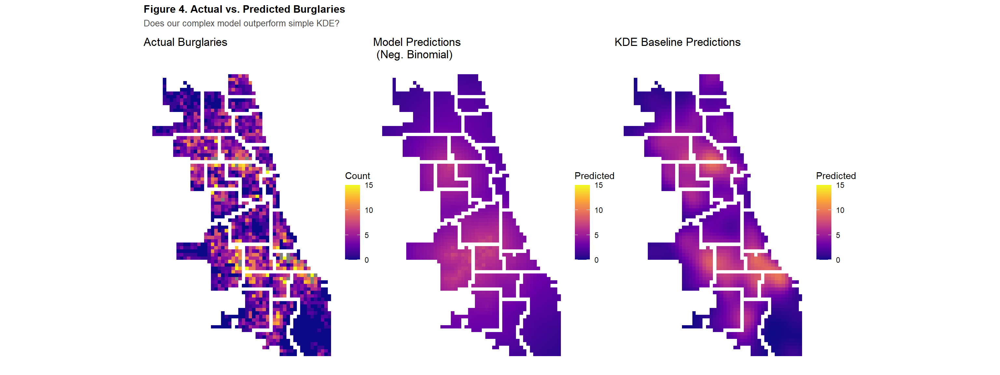
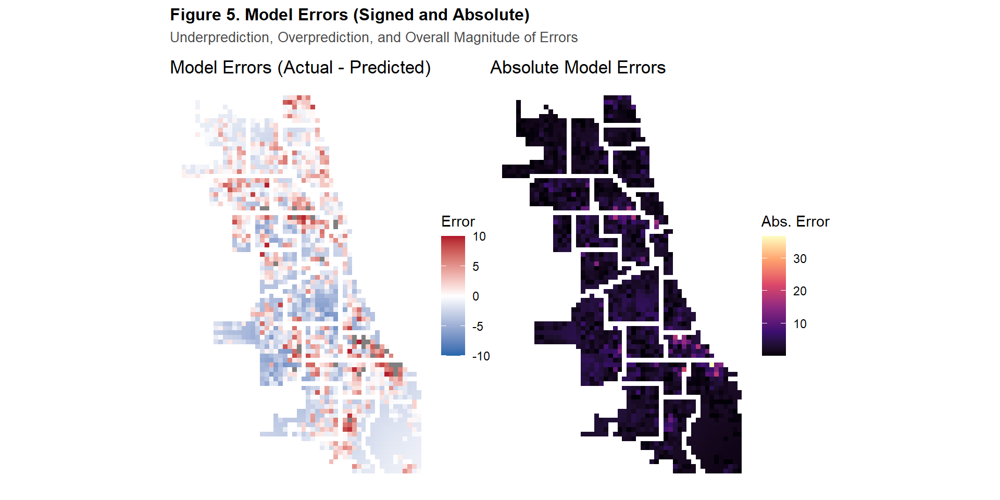

| Dataset | Rows |
|---|---|
| Raw Vacancy Data | 5012 |
| 2017 Vacancy Data | 422 |
| Cleaned Vacancy Data | 399 |
Assignment 4: Spatial Predictive Analysis
Evaluating Predictive Policing Models
Introduction
Predictive policing is a controversial yet widely used practice that aims to prevent crime by anticipating where it is likely to occur. Police departments and vendors promote predictive policing algorithms as they ideally allow for efficient deployment of policing units, objective and data-driven analysis of crime, and an overall proactive strategy for addressing crime. Over time, predictive policing has evolved through several technical generations. One approach to predictive policing is risk terrain modeling which aims to identify the relationship between environmental features and crime. Conceptually, risk terrain modeling is aligned with the Broken Windows Theory which suggests that visible signs of neighborhood disorder lead to crime.
In this analysis, the risk terrain modeling framework is applied to evaluate both its predictive capacity and broader implications. Drawing on the logic of the Broken Windows Theory, the predictive model examines burglary counts in relation to the presence of vacant and abandoned buildings. According to Broken Windows Theory, areas with higher concentrations of vacant and abandoned buildings should be considered at greater risk for heightened crime.
Part 1: Data Loading & Exploration
The original vacant and abandoned building dataset was filtered to only include data from 2017 and further cleaned to remove any entries with no geometry data, ensuring accuracy in our spatial analysis. The resulting dataset used for the remainder of this analysis reported 399 vacant and abandoned buildings in Chicago for 2017.

Figure 1 shows the initial exploratory visualization of vacant and abandoned buildings in Chicago : a point map showing the precise locations of individual buildings (left), and a kernel density estimation (KDE) map that highlights areas of concentrated vacancy across the city (right). Both maps illustrate the uneven distribution of vacant buildings across Chicago. The KDE map specifically reveals a dense concentration of vacant buildings in Southwest Chicago, as well as a smaller cluster of buildings in West Chicago.
Part 2: Fishnet Grid Creation

Figure 2 depicts the distribution of vacant and abandoned houses through a fishnet grid. Fishnet grids are a staple in predictive policing because they provide evenly sized consistent spatial units that simplify analysis and reduce bias from pre-existing irregular boundaries. In this analysis, a 500 m x 500 m fishnet grid specifically is used to provide a balance between nuanced local patterns and computational ease. Compared to the kernel density map of vacant and abandoned buildings, the fishnet grid is more precise as it summarizes local cell counts, highlighting outliers in North, Northwest, and Far South Chicago and more defined clusters in West and Southwest Chicago.
Part 3: Spatial Features
In this analysis, two spatial features are introduced to enhance the model’s predictive power: the distance to the three nearest vacant and abandoned building and the distance to the nearest hotspot or cluster of cells with high numbers of such buildings. By combining these spatial measures with the raw counts of vacant and abandoned buildings, the model is able to capture multi-scale generalized spatial patterns as well as potential spillover effects, where the influence of vacancy extends into nearby areas.
The first spatial feature created in this analysis is each cell’s average distance to the three nearest vacant or abandoned buildings. This predictive model operates on the assumption that proximity to vacant or abandoned buildings is correlated with levels of crimes. Though outliers can be important, k-nearest neighbor feature as well as the distance to hotspot feature smooth the data to reveal broader spatial trends rather than a relationship to a single property. Each cell already considers the local proximity to these buildings while the k-nearest neighbor spatial feature (where k=3) introduces another spatial scale of proximity: neighborhood-level proximity.
The second spatial feature created for this analysis was each cell’s distance to clusters of cells with high amounts of vacant and abandoned buildings near other cells with similar high amounts, known as “High-High” clusters. These clusters theoretically symbolize hotspots or areas with significant levels of disorder. Calculating distance from these hotspots allows the model to account for regional-level spatial analysis like the one shown in the kernel density estimation map. Before calculating the distance to these hotspots, first the hotspots were identified by using a statistical measure of spatial autocorrelation, Local Moran’s I. This approach moves beyond simple counts or visual diagnostics by formally testing where clustering is statistically significant.

The map in Figure 3 presents the results of a Local Moran’s I spatial autocorrelation analysis. Local Moran’s I in the context of predictive policing measures how similar or dissimilar a cells value is to a set number of neighbors. In this case, the 5 nearest cells or neighbors were used to determine the level of spatial autocorrelation. While most on Chicago’s grid cells were found to be not significantly spatially correlated, there seems to be a radial effect of “High-High” clusters (red) immediately surrounded by low-value cells near high-value cells (blue) in Southeast and Southwest Chicago. The same pattern appears on a smaller scale in West Chicago as well. Each cell’s average distance was then calculated from the clusters identified as “High-High”.
Part 4: Count Regression Models
As previously mentioned, the dependent variable that the model is intended to predict is the raw counts of burglaries across Chicago. The most commonly used regression model, Ordinary Least Squares (OLS), is not appropriate in this context as OLS regression assumes continuous outcomes, constant variance in errors and the normal distribution of errors, all of which are often violated in discrete count data. In addition, OLS can generate negative predicted values, which are not theoretically meaningful for discrete, non‑negative outcomes such as crime counts.
In order to address these limitations, count regression models, starting with Poisson regression, were used for this analysis. Poisson regression assumes the mean and variance of observations are equal. When this assumption is violated and the variance exceeds the mean, the model exhibits overdispersion. Overdispersion can be accounted for by fitting a Negative Binomial regression model which mirrors the Poisson but differs by allowing for the mean and variance to differ. Overdispersion can be statistically measured by dividing a model’s sum of squared residuals by the model’s degrees of freedom. The threshold for problematic dispersion is when it is calculated to be greater than 1.5, indicating that a Negative Binomial model may be more appropriate. After fitting the Poisson regression model to the data and testing for overdispersion, the dispersion parameter returned a 3.6, indicating substantial overdispersion. Thus, a Negative Binomial model was also fitted. The models were then compared based on their resulting Akaike Information Criterion (AIC) which is a statistic that allows models to be compared based on their balance of complexity and predictive power. A lower AIC indicates the better model. Table 2 shows that the Negative Binomial is a more appropriate model for this anaylsis as it yields a lower AIC in addition to account for overdispersion.
| Model | AIC |
|---|---|
| Poisson | 9843.24 |
| Negative Binomial | 7905.93 |
Part 5: Spatial Cross-Validation
To evaluate model’s ability generalize to unseen data, Leave-One-Group-Out Cross-Validation (LOGO-CV) was implemented, holding out entire police districts during each fold. Although the same dataset is used throughout cross-validation, the observations are split into training and test sets: the training set of districts is used to fit the model, while the excluded district serves as the test set to assess predictive performance. This specific approach of leaving one group out minimizes the impact of spatial autocorrelation and avoids spatial leakage when splitting the data into train and test groups by using entire groups of neighboring observations rather than individual cells. Furthermore, rather than using the arbitrary grid cells, using police districts as the spatial unit of measurement considers real-world deployment of police resources as it assess whether the model captures district-level crime trends. The model’s performance was assessed by calculating the prediction error metrics, Mean Absolute Error (MAE) and Root Mean Squared Error (RMSE), per district. Table 3 reports the error metrics obtained when each district was used as the test set.
| Fold | Test_District | N_Test | MAE | RMSE |
|---|---|---|---|---|
| 7 | 3 | 43 | 6.29 | 7.95 |
| 12 | 12 | 73 | 3.70 | 4.98 |
| 9 | 9 | 107 | 3.70 | 4.14 |
| 5 | 8 | 197 | 3.64 | 4.20 |
| 4 | 6 | 63 | 3.32 | 4.68 |
| 14 | 11 | 43 | 3.29 | 3.88 |
| 17 | 14 | 46 | 2.89 | 4.25 |
| 6 | 7 | 52 | 2.74 | 3.33 |
| 8 | 2 | 56 | 2.73 | 3.34 |
| 10 | 10 | 63 | 2.62 | 3.36 |
| 16 | 25 | 85 | 2.59 | 3.59 |
| 3 | 22 | 112 | 2.50 | 2.82 |
| 15 | 18 | 30 | 2.48 | 4.21 |
| 11 | 1 | 28 | 2.45 | 2.85 |
| 13 | 15 | 32 | 2.41 | 3.03 |
| 1 | 5 | 98 | 2.41 | 3.21 |
| 22 | 24 | 41 | 2.36 | 3.43 |
| 2 | 4 | 235 | 2.32 | 3.85 |
| 18 | 19 | 63 | 2.09 | 2.72 |
| 20 | 17 | 82 | 1.87 | 2.29 |
| 21 | 20 | 30 | 1.58 | 1.85 |
| 19 | 16 | 129 | 1.29 | 1.61 |
Table 3 shows that the district the model struggles to predict the most is District 3, as it returns the highest MAE of 6.29 and a RMSE of 7.95. The table also shows the districts the model generalizes well to Districts 16, 17, and 20 as they exhibited the lowest prediction errors, with MAE values between 1.29 and 1.87 and RMSE values between 1.61 and 2.29. Most of the police districts fell into a moderate performance range, with MAE values between 2.32 and 3.70 and RMSE values between 2.72 and 4.98. Overall, the cross-validation results indicate that the model’s predictive accuracy varies substantially across police districts.
Part 6: Model Evaluation
A baseline KDE map of burglaries was created in order to further evaluate the model’s performance. Prior to the development of risk terrain modeling, predictive policing relied on hotspot approaches which assumed that crime was most likely to occur in the same locations where it had previously occurred. This hotspot approach relies solely on past crime locations and applies spatial smoothing to identify at-risk areas. The actual locations of burglaries, the spatial model’s predictions, and the KDE baseline predictions were all plotted side-by-side in order to determine which approach more accurately captures the spatial concentration of burglaries.

Figure 4 compares the actual count of burglaries to the model’s and KDE baseline predictions. The visual assessment of the three maps illustrates that KDE baseline prediction outperforms the complex spatial modeling in identifying concentrations of burglaries across Chicago. Table 4 further supports the conclusion drawn from the map as, because MAE and RMSE are lower for the KDE baseline than for the spatial model, the baseline achieves lower average prediction errors and exhibits fewer large errors.
| Approach | MAE | RMSE |
|---|---|---|
| Model | 2.64 | 3.66 |
| KDE | 2.06 | 2.95 |
An additional way to assess model performance is by mapping the distribution of its errors, which reveals whether systematic spatial patterns of errors emerge within the model itself.

Figure 5 offers further look into the spatial distribution of the model’s errors. The map on the left of the model’s signed errors shows that the model often underestimating the amount of burglaries in high crime areas while over-predicting crimes in low crime areas. The absolute error map (right) shows that the largest prediction errors were concentrated in Districts 3, 4, and 6 in South and Southeast Chicago, followed by additional high errors in Districts 14 and 17 in the North and West. Overall, the model’s predictions were inconsistent in identifying observed burglary patterns.
A look into the model’s coefficients can also reflect model perform by telling us which of the model’s predictors were statistically significant and their association with risk of burglaries.
| Variable | Rate Ratio | Std. Error | Z | P-Value |
|---|---|---|---|---|
| (Intercept) | 6.818 | 0.049 | 38.795 | 0.00 |
| countBuildings | 1.009 | 0.024 | 0.359 | 0.72 |
| vac_buildings.nn | 1.000 | 0.000 | -4.016 | 0.00 |
| dist_to_hotspot | 1.000 | 0.000 | -9.731 | 0.00 |
| Note: | ||||
| Rate ratios > 1 indicate positive association with burglary counts. |
Table 5 shows that the rate ratios for all predictors were close to 1, suggesting that although the spatial features were found to be statistically significant (p-value < 0.05) none of the predictors substantially altered burglary risk. This indicates that the predictors contributed minimally to the model’s ability to explain or predict burglary patterns.
Conclusion
In the scenario offered by this analysis, reliance on Broken Windows Theory and risk terrain modeling would result in ineffective deployment of police units. Both Broken Windows Theory and predictive policing approaches oversimplify crime by assuming that complex social issues can be predicted through superficial, and often stigmatized, indicators of disorder. By attempting to remain unbiased and objective, these approaches neglect the socio-historical forces that shape communities, crime, and policing, which not only undermines predictive accuracy but also increases the risk of reproducing existing inequities.